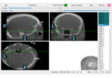
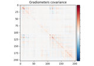

Examples#
These examples show how to use MNE-GUI-Addons.

Locating micro-scale intracranial electrode contacts
Locating micro-scale intracranial electrode contacts

Volume Source Time Course Estimate for a Group Study
Volume Source Time Course Estimate for a Group Study

Compute evoked ERS source power using DICS, LCMV beamformer, and dSPM
Compute evoked ERS source power using DICS, LCMV beamformer, and dSPM
Locating intracranial electrode contacts
Locating intracranial electrode contacts